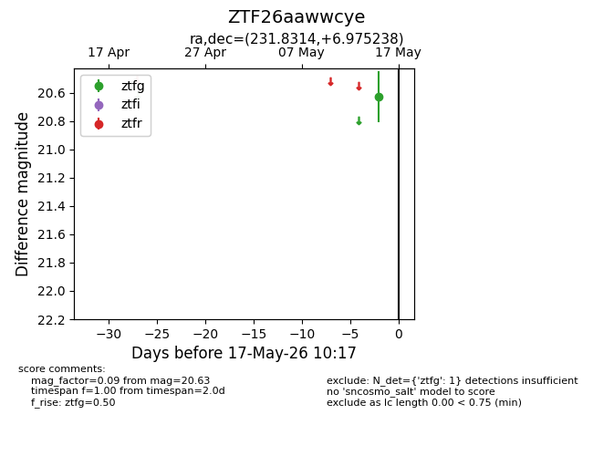
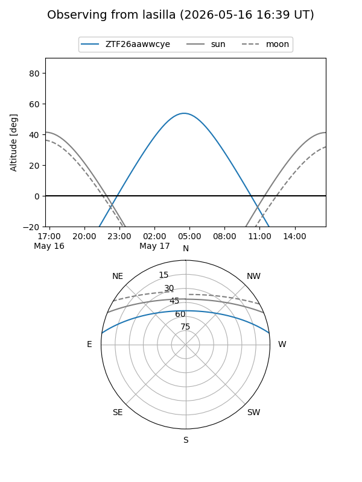
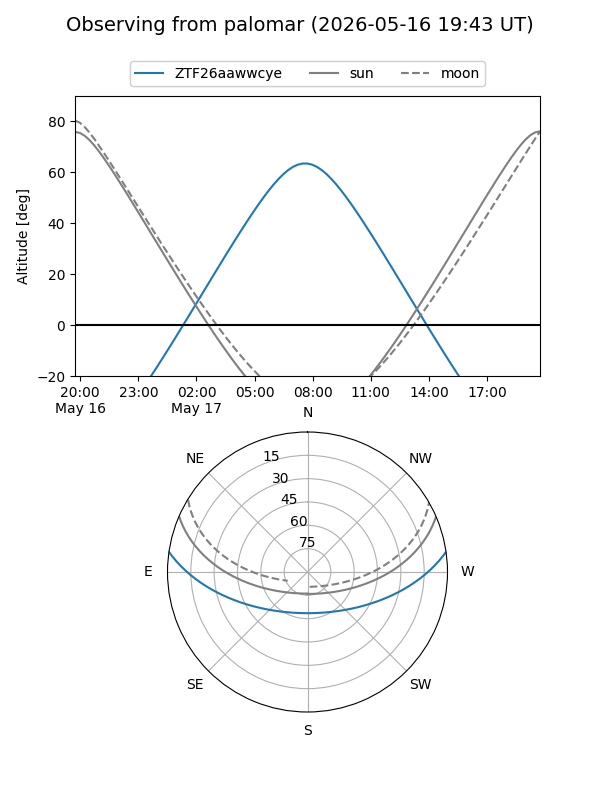

ZTF26aawwcye
Target ZTF26aawwcye at 2026-05-17 10:19
Aliases and brokers:
FINK: link
Lasair: link
ALeRCE: link
alt names
ZTF26aawwcye (ztf,fink_ztf)
Coordinates:
equatorial (ra, dec) = 231.8314,+6.97524
equatorial (HMS+DMS) = 15:27:19.53,+06:58:30.86
galactic (l, b) = (11.5997,+47.91735)
Flags:
Photometry:
last ztfg=20.63
1 ztfg detections
Lightcurve

Visibility


Additional plots